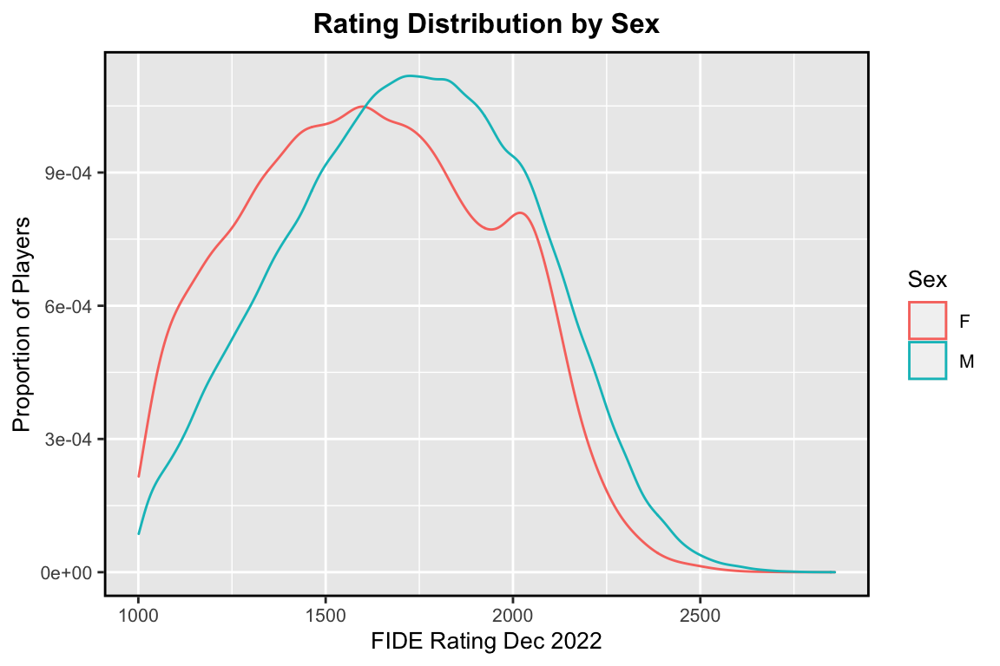
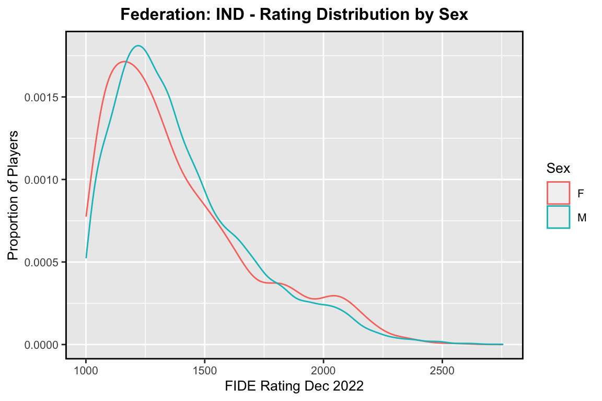

Chapter 1 Is there gender gap in Chess?
1.1 FIDE Ratings
I downloaded the Dec 2022, FIDE Standard rating list in XML format and parsed it as CSV in Python and removed all junior players born after 2002. See here for the github repository. This is how it looks like,
## fideid name country sex title rating birthday
## 1 25121731 A C J John IND M 1063 1987
## 2 35077023 A Chakravarthy IND M 1151 1986
## 3 10207538 A E M, Doshtagir BAN M 1840 1974## Number of players: 300,912
The above graph shows that the proportion of female chess players in any given rating interval is roughly equal to the proportion of male chess players. However, we notice that the female rating distribution lies to the left of male.
Hence, the research question is,
- whether the two distributions are same, and the shift is due to random chance, or
- the ratings of male chess players tend to be larger compared to female players and the shift is (statistically) significant
1.2 Hypothesis
Let M and F be the underlying unspecified distributions for the ratings of male and female players, respectively. We assume,
- the ratings of male players are independent of each other
- the ratings of female players are independent of each other
- the ratings of male players are independent of the female players
These assumptions are speculative because the FIDE rating system is based on a player’s performance relative to other players and not on their absolute skill level. For instance, most female players tend to play in an only-female pool with a relatively lower rating cap than the open pool. Players will tend to have lower ratings if a pool has a lower rating cap than a pool with a higher cap.
Keeping this in mind, we devise the following one-sided test to answer the research question,
Null Hypothesis: M = F, the two distributions are same
Alternative Hypothesis: Ratings from M tend to be larger than ratings from F
1.2.1 Test Statistic
Under the Null Hypothesis, all ratings are independent and identically distributed. If we sample (without replacement) as many ratings as there are female players, the sampled ratings are equally likely to be the ratings of female players.
Because the alternative hypothesis is that ratings from distribution F tend to be smaller than ratings from distribution M, a reasonable test would be to
- reject the null hypothesis if the sum of sampled ratings is smaller than might be expected by chance
Hence, we choose \(\sum\limits_i F_i\) as our test statistic where \(F_i\) are ratings of female players
1.2.2 p-value
- The probability of observing results as extreme as the observed results under the Null probability model.
- That is, \(\text{Pr}(\sum\limits_i F_i) < t\), where \(t\) is the observed test statistic, which is the sum of actual ratings of female players.
1.2.3 Procedure
- Assume the Null hypothesis is true and create the corresponding Null probability model.
- Test whether the observed sum of ratings is a reasonable outcome of the Null probability model.
- Or whether the observed sum of ratings is within the random variability of the Null model.
1.2.4 Significance Level / Type I error (α)
- The probability of rejecting a true Null hypothesis.
- Must be defined before the experiment.
- We will set α = 0.05
1.2.5 Type II error (β)
- The probability of failing to reject a false Null hypothesis.
- Power (1-β): The probability of rejecting a false Null hypothesis.
1.2.6 Decision
- α ≥ p-value: Reject the Null hypothesis, and conclude enough evidence to claim the ratings of male players tend to be larger than those of female players
- α < p-value: Fail to reject the Null hypothesis, and conclude lack thereof
1.2.7 Permutation Test
- Non-parametric procedure, makes no specific assumptions about the form of any underlying probability distributions
- Assumes the data is independent and identically distributed (i.i.d) under the null hypothesis
- Given the size of data, full permutation test will not be possible. We will stick to randomization test.
1.3 Statistical Analysis
1.3.1 Observation
T_ratings = df$rating # All ratings
M_ratings = df[df$sex=='M',]$rating # Ratings of male players
F_ratings = df[df$sex=='F',]$rating # Ratings of female playersT_count = length(T_ratings) # Total players
M_count = length(M_ratings) # Number of male players
F_count = length(F_ratings) # Number of female players## Total players : 300,912
## Number of male chess players : 276,404
## Number of female chess players : 24,508M_observed = sum(M_ratings) # Sum of ratings of male players
F_observed = sum(F_ratings) # Sum of ratings of female players
t_observed = F_observed # Observed test statistic## Observed sum of male ratings : 476,121,060
## Observed sum of female ratings : 39,727,256
## Observed test statistic : 39,727,2561.3.2 Permutation Step
set.seed(0) # For reproducibility
T_ratings = sample(T_ratings) # Shuffle all ratings once
F_ratings = sample(T_ratings, size=F_count, replace=FALSE) # Sample female ratings
t = sum(F_ratings) # Calculate test statistic## (1) Resampled test statistic : 41,949,397
## (2) Observed test statistic : 39,727,2561.3.3 Repeating Permutation Step
# Repeat steps a 'large number of times' (p)
p = 1000 # Number of permutations
perm_res = rep(0, p) # Vector for saving permutation results
for (i in 1:p) {
F_ratings = sample(T_ratings, size=F_count, replace=FALSE) # Sample female ratings
t = sum(F_ratings) # Calculate test statistic
perm_res[i] = t # Save test statistic
}1.4 Case of India
Let’s do the same analysis for Indian chess players

1.4.1 Observation
## Total players : 24,403
## Number of male chess players : 22,509
## Number of female chess players : 1,894## Observed sum of male ratings : 31,460,849
## Observed sum of female ratings : 2,632,409
## Observed test statistic : 2,632,4091.5 Comparing Top Players
We can also compare top rated male and female players
## Highest rated male player: Carlsen, Magnus rated 2859
## Highest rated female player: Polgar, Judit rated 2675
## Difference (M-F): 184We can try to answer yet another question,
- Is this difference just due to random chance?
- Or, is it (statistically) significant?
1.5.1 Hypothesis
Instead of comparing the highest rated players, we will take into account the 10 highest rated players. So, our test statistic becomes \(M-F\) with \(M = \frac{1}{10}\sum\limits_{i=1}^{10} M_{(i)}\) and \(F = \frac{1}{10}\sum\limits_{i=1}^{10} F_{(i)}\) where \(M_{(i)}\) and \(F_{(i)}\) are ordered statistics. The hypothesis is then,
- Null Hypothesis: Observed difference is due to random chance (M - F = 0)
- Alternative Hypothesis: Observed difference is real (M - F > 0) and the top rated male players are significantly higher rated than the top rated female players
1.5.2 Observation
T_ratings = df$rating # All ratings
M_ratings = df[df$sex=='M',]$rating # Ratings of male players
F_ratings = df[df$sex=='F',]$rating # Ratings of female playersT_count = length(T_ratings) # Total players
M_count = length(M_ratings) # Number of male players
F_count = length(F_ratings) # Number of female players## Total players: 300,912
## Number of male chess players: 276,404
## Number of female chess players: 24,508M_observed = mean(tail(sort(M_ratings), size=10)) # Mean rating of male players
F_observed = mean(tail(sort(F_ratings), size=10)) # Mean rating of female players
t_observed = M_observed - F_observed # Observed test statistic## Observed mean rating of top male players: 2,801.5
## Observed mean rating of top female players: 2,603.333
## Observed test statistic: 198.16671.5.3 Permutation Step
T_ratings = sample(T_ratings) # Shuffle all ratings
M_ratings = T_ratings[1:M_count] # Sample male ratings
F_ratings = T_ratings[((M_count+1):T_count)] # Sample female ratingsM = mean(tail(sort(M_ratings), size=10)) # Mean rating of male players
F = mean(tail(sort(F_ratings), size=10)) # Mean rating of female players players
t = M - F # Observed test statistic## (1) Resampled test statistic : 85.66667
## (2) Observed test statistic : 198.16671.5.4 Repeating Permutation Step
# Repeat steps a 'large number of times' (p)
p = 1000 # Number of permutations
perm_res = rep(0, p) # Vector for saving permutation results
for (i in 1:p) {
T_ratings = sample(T_ratings) # Shuffle all ratings
M_ratings = T_ratings[1:M_count] # Sample male ratings
F_ratings = T_ratings[((M_count+1):T_count)] # Sample female ratings players
M = mean(tail(sort(M_ratings), size=10)) # Mean rating of male players
F = mean(tail(sort(F_ratings), size=10)) # Mean rating of female players
t = M - F # Observed test statistic
perm_res[i] = t
}1.6 Case of India: Top Players
## Highest rated male player: Anand, Viswanathan rated 2754
## Highest rated female player: Koneru, Humpy rated 2572
## Difference (M-F): 1821.6.1 Observation
## Total players: 24,403
## Number of male chess players: 22,509
## Number of female chess players: 1,894## Observed mean rating of top male players: 2,689.833
## Observed mean rating of top female players: 2,440
## Observed test statistic: 249.8333